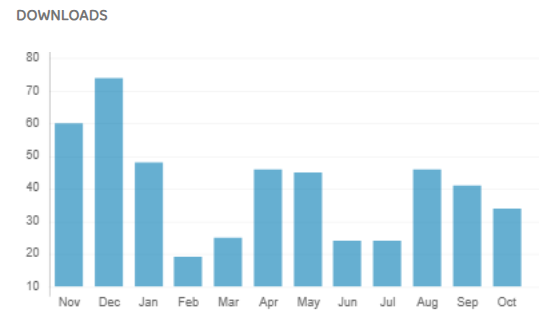

The Effectiveness of Brain Gym Exercises in Improving Cognitive Function in Older Adults: Literature Review
ABSTRACT
Background: Cognitive decline is common among older adults and may reduce independence and quality of life. Brain Gym is a non-pharmacological intervention used to stimulate brain function and maintain cognitive performance, but evidence of its effectiveness remains varied.
Method: This study employed a systematic review design using articles published between 2022 and 2025. Literature searches were conducted through PubMed, ScienceDirect, Google Scholar, DOAJ, Garuda, and SINTA using relevant keywords and Boolean operators. Article selection followed the PRISMA 2020 guidelines and the PICOS framework. A total of 82 articles were identified, of which 10 met the inclusion criteria and were included in the final analysis.
Results: Most of the reviewed studies demonstrated that Brain Gym exercises significantly improved cognitive function in older adults, particularly in the domains of memory, attention, concentration, orientation, and executive function. Eight of the ten included studies reported significant improvements in cognitive assessment scores, especially using the Mini Mental State Examination (MMSE), following regular Brain Gym interventions. However, two international review studies indicated that although individual studies generally showed positive findings, the overall level of evidence remains limited because of methodological heterogeneity, small sample sizes, and variations in intervention protocols.
Conclusion: Brain Gym exercises may be a safe, effective, and low-cost intervention for improving cognitive function in older adults. Further high-quality randomized controlled trials are needed to confirm their effectiveness.

REFERENCES
- Adriani, D. D., Oenzil, F., & Sulastri, D. (2020). Effect of Brain Gym® exercises on cognitive function and brain-derived neurotrophic factor plasma level in elderly: A randomized controlled trial. Universa Medicina, 39(1), 34–41. https://doi.org/10.18051/UnivMed.2020.v39.34-41
- Azizah, I. N., Juwariyah, S., & Handayani, P. A. (2025). Perbedaan Brain Gym dan Puzzle Therapy terhadap fungsi kognitif lansia. Indonesian Journal of Nursing Research. Open article
- Karim, B. A., & Puspita, L. (2024). Pemberian Brain Gym Exercise terhadap peningkatan fungsi kognitif pada lansia. Medicare: Jurnal Ilmiah Keperawatan. Open article
- Karamacoska, D., Butt, A., Leung, I. H. K., Childs, R. L., Metri, N.-J., Uruthiran, V., Tan, T., Sabag, A., & Steiner-Lim, G. Z. (2023). Brain function effects of exercise interventions for cognitive decline: A systematic review and meta-analysis. Frontiers in Neuroscience, 17, 1127065. https://doi.org/10.3389/fnins.2023.1127065
- Kusdianto, R., & Astrid, M. (2024). Pengaruh kombinasi edukasi dan Brain Gym terhadap fungsi kognitif pada pasien lansia: Kajian literatur. Jurnal PREPOTIF: Jurnal Kesehatan Masyarakat. Open article
- Lina, R. K., & Kurniawan, G. P. D. (2022). Brain Gym Exercise give benefit to improve cognitive function among elderly: A systematic review. Jurnal Ilmiah Teknologi Kesehatan, 9(2), 261–271. https://doi.org/10.32668/jitek.v9i2.543
- Mahfud, & Jelita. (2023). Senam Brain Gym berhubungan dengan fungsi kognitif pada lansia di Puskesmas II Sedayu. Indonesian Journal of Hospital Administration. Open article
- Nurli, Hamzah, I. A., & Arfan, F. (2024). Efektivitas senam otak (Brain Gym) terhadap fungsi kognitif pada lansia. Madani Cendekia Journal. Open article
- Page, M. J., et al. (2021). The PRISMA 2020 statement: An updated guideline for reporting systematic reviews. The BMJ, 372, n71. https://doi.org/10.1136/bmj.n71
- Ramayanti, E. D., Sulistyawati, W., Etika, A. N., Nurseskasatmata, S. E., & Susmiati. (2022). Pengaruh Brain Gym terhadap fungsi kognitif lansia dengan riwayat demensia. Nursing Sciences Journal. Open article
- Satria, A. W. W., Dewi, N. S., & Fathrani, L. F. (2024). Penambahan Brain Gym meningkatkan fungsi kognitif lansia. Jurnal Ilmiah Mahasiswa Ilmu Eksakta. Open article
- Setiawan, C., Sari, A. Y., & Wijayanti, A. A. (2024). Effect providing Brain Gym on improving cognitive function in elderly: Meta-analysis. FISIO MU: Physiotherapy Evidences, 6(2). https://doi.org/10.23917/fisiomu.v6i2.8470
- Varela, S., Ayán, C., Bidaurrazaga-Letona, I., Diz, J. C., & Duñabeitia, I. (2023). The effect of Brain Gym on cognitive function in older people: A systematic review and meta-analysis. Geriatric Nursing, 53, 175–180. https://doi.org/10.1016/j.gerinurse.2023.07.015
- World Health Organization. (2021). Decade of healthy ageing: Baseline report. World Health Organization. Open report
- Zhidong, C., Wang, X., Yin, J., Song, D., & Chen, Z. (2021). Effects of physical exercise on working memory in older adults: A systematic review and meta-analysis. European Review of Aging and Physical Activity, 18(1), 1–15. https://doi.org/10.1186/s11556-021-00272-y